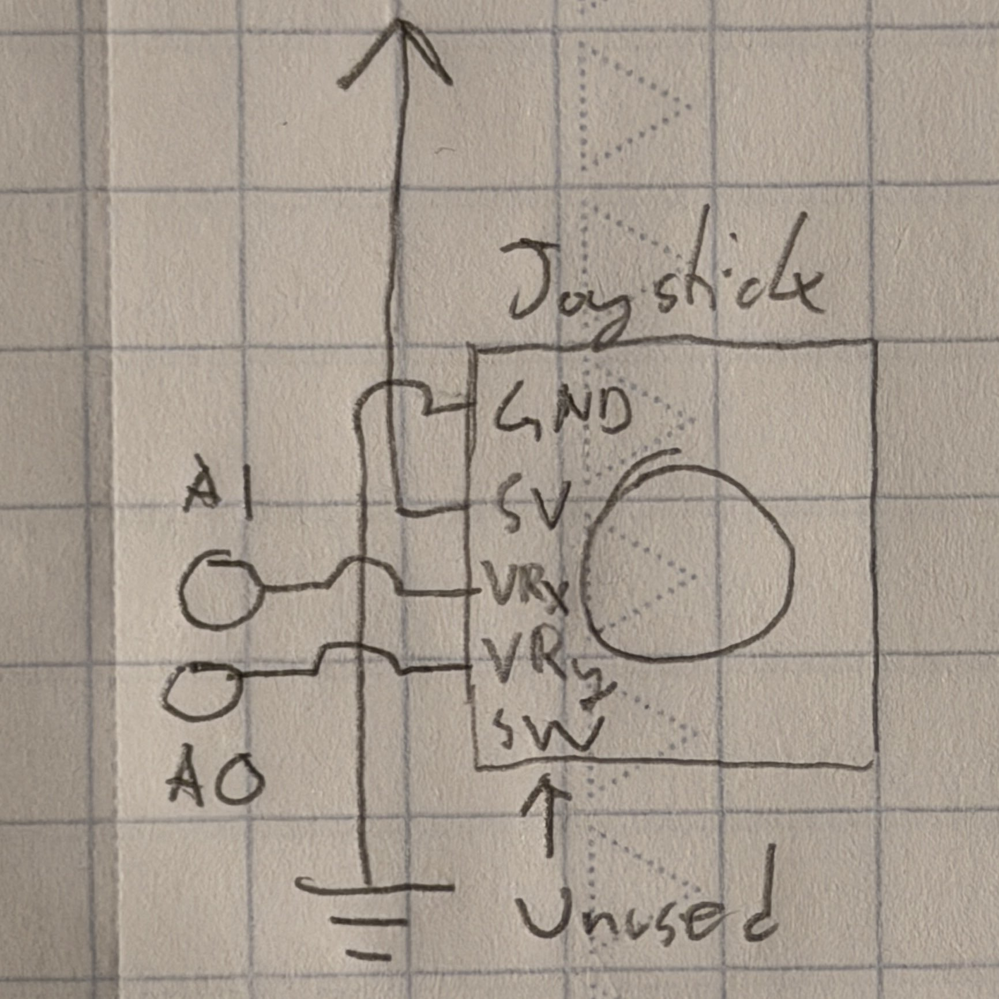
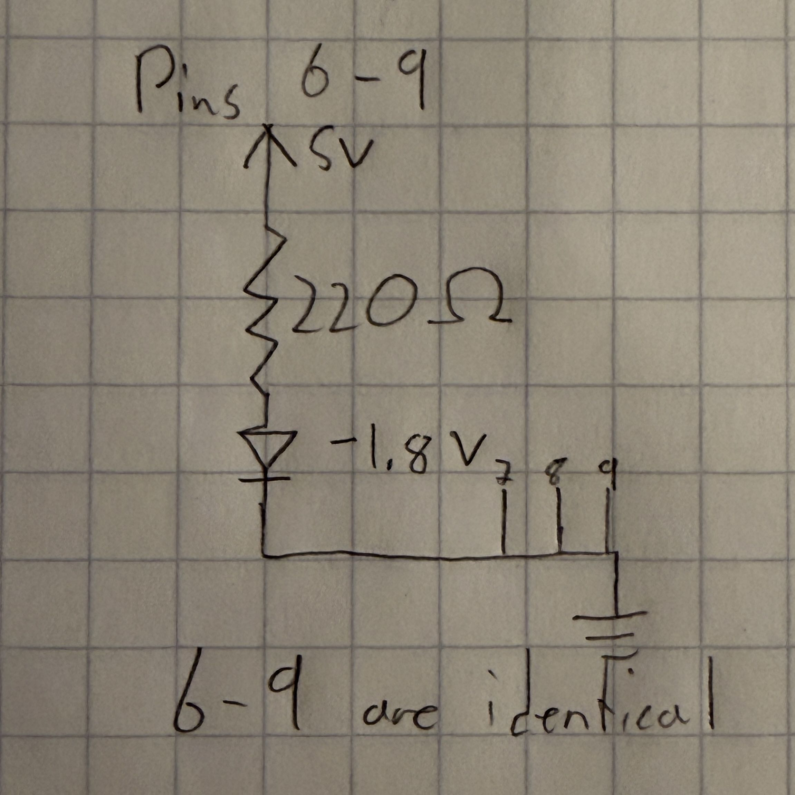

Assignment 6: Talking to the web!
Images:
 Picture of my circuit. The Arduino receives position data from the joystick and
utilizes that to light up the LEDs based on the stick's current direction. It also
sends the data to my computer and the webpage. Up to two LEDs can be lit at once,
based on the joystick directions. I did not use the joystick's SW pin, which is used
by the joystick button.
Picture of my circuit. The Arduino receives position data from the joystick and
utilizes that to light up the LEDs based on the stick's current direction. It also
sends the data to my computer and the webpage. Up to two LEDs can be lit at once,
based on the joystick directions. I did not use the joystick's SW pin, which is used
by the joystick button.


These diagrams represent the configuration of the LEDs and joystick. The joystick
included in the class kit has five pins for a 5 V power source and ground, axis
readings, and a button input. As previously mentioned, I didn't use the button input
pin and the axis readings were sent to two of the Arduino's analog pins.
The red LEDs are the same ones used in previous projects this quarter, and draw 5 V
with an ideal maximum current of around 20 mAh. Each LED draws power from a separate
digital pin on the Arduino, which is how they are separately lit up. For each of the
LEDs, I used the following Ohm's law calculation to find ideal resistances:
5V - 1.8V / 20 mA = R = 160 Ω
I chose 220 Ω resistors to get closest to this value.
Code:
This my code for the Arduino, using inputs from the joystick to control the LEDs and
the webpage objects:
// Controls four LEDs and sends signals to the connected computer through a serial port based on
// the position of an attached joystick. Toggles the function of the LEDs if a computer key is
// pressed (with webpage code).
const int xPin = A1; // Identifies the X-axis pin
const int yPin = A0; // Identifies the Y-axis pin
const int ledL = 9; // Identifies the left LED pin
const int ledR = 8; // Identifies the right LED pin
const int ledUp = 7; // Identifies the upper LED pin
const int ledDn = 6; // Identifies the lower LED pin
int xVal = 0; // Creates a variable for the X-axis reading
int yVal = 0; // Creates a variable for the Y-axis reading
int xMax = 517; // Initial maximum X-axis deadzone
int xMin = 513; // Initial minimum X-axis deadzone
int yMax = 517; // Initial maximum Y-axis deadzone
int yMin = 513; // Initial minimum Y-axis deadzone
bool lights = true; // Creates a variable for the lights
void setup() {
Serial.begin(9600); // Sets baud rate for serial usage
while (millis() < 5000) { // Starts calibration period to identify deadzones
xVal = analogRead(xPin); // Reads the value from the X-axis pin
yVal = analogRead(yPin); // Reads the value from the Y-axis pin
if (xVal > xMax) { // If current X-axis reading exceeds the max recorded value
xMax = xVal; // Sets the max value to the current value
}
if (xVal < xMin) { // If current X-axis reading exceeds the min recorded value
xMin = xVal; // Sets the min value to the current value
}
if (yVal > yMax) { // If current Y-axis reading exceeds the max recorded value
yMax = yVal; // Sets the max value to the current value
}
if (yVal < yMin) { // If current Y-axis reading exceeds the min recorded value
yMin = yVal; // Sets the min value to the current value
}
}
pinMode(ledL, OUTPUT); // Sets the left LED pin for output
pinMode(ledR, OUTPUT); // Sets the right LED pin for output
pinMode(ledUp, OUTPUT); // Sets the upper LED pin for output
pinMode(ledDn, OUTPUT); // Sets the lower LED pin for output
}
void loop() {
if (Serial.available() > 0) { // If there is serial output
int inByte = Serial.read(); // Reads from the port
if (inByte == 49) { // If "1" was received
lights = false; // Sets lights to false
} else { // If lights is not true
lights = true; // Sets lights to true
}
}
if (lights) { // If lights is true
xVal = analogRead(xPin); // Reads the value from the X-axis pin
yVal = analogRead(yPin); // Reads the value from the Y-axis pin
Serial.print(xVal); // Prints the Y-axis input
Serial.print(","); // Separates the values
Serial.println(yVal); // Prints the X-axis input
if (xVal > xMax) { // Stick pushed right
digitalWrite(ledR, HIGH); // Turns on right LED
digitalWrite(ledL, LOW); // Turns off left LED
} else if (xVal < xMin) { // Stick pushed left
digitalWrite(ledR, LOW); // Turns off right LED
digitalWrite(ledL, HIGH); // Turns on left LED
} else { // Stick in X-axis deadzone
digitalWrite(ledR, LOW); // Turns off right LED
digitalWrite(ledL, LOW); // Turns off left LED
}
if (yVal > yMax) { // Stick pushed down
digitalWrite(ledUp, LOW); // Turns off upper LED
digitalWrite(ledDn, HIGH); // Turns on lower LED
} else if (yVal < yMin) { // Stick pushed up
digitalWrite(ledUp, HIGH); // Turns on upper LED
digitalWrite(ledDn, LOW); // Turns off lower LED
} else { // Stick in Y-axis deadzone
digitalWrite(ledUp, LOW); // Turns off upper LED
digitalWrite(ledDn, LOW); // Turns off lower LED
}
delay(50); // Wait 50 ms
} else { // If lights is not true
digitalWrite(ledR, LOW); // Turns off right LED
digitalWrite(ledL, LOW); // Turns off left LED
digitalWrite(ledUp, LOW); // Turns off upper LED
digitalWrite(ledDn, LOW); // Turns off lower LED
return; // Returns
}
}
This is my p5.js code:
// Uses data from the Arduino to control a square and circle on the screen, representing the
// joystick axis positions. Also toggles the function of the LEDs (with Arduino code) when a key
// is pressed on the computer.
// This code is partly based on the in-class p5.js demos, although the code for drawing the
// elements is original.
const BAUD_RATE = 9600; // Sets up baud rate for serial usage
let port, connectBtn, elementSize; // Declare global variables
// Sets up the canvas
function setup() {
setupSerial(); // Runs the serial setup function
createCanvas(windowWidth, windowHeight); // Creates a canvas sized to the browser window
textFont("system-ui", 50); // Sets the font (https://p5js.org/reference/)
textStyle(BOLD); // Sets the font style to bold
textAlign(CENTER, CENTER); // Sets text center alignment
blendMode(ADD); // Sets canvas blend mode (https://p5js.org/reference/#/p5/blendMode)
}
// Creates the visuals
function draw() {
const portIsOpen = checkPort(); // Check whether the port is open (see checkPort function below)
if (!portIsOpen) return; // Returns (exit the loop) if the port isn't open
let str = port.readUntil("\n"); // Reads from the port until reaching a new line
if (str.length == 0) return; // Returns if nothing is read
let positionArray = str.trim().split(","); // Trims whitespace, splits array elements by commas
elementSize = min(windowWidth, windowHeight) * 0.3; // Limits size of the main elements
clear(); // Clear the canvas
background(0); // Make the background black
translate(windowWidth / 2, windowHeight / 2); // Move the origin to the center
fill("cornflowerblue"); // Sets color for text/objects
text(`Joystick position: X${positionArray[0]}, Y${positionArray[1]}`, 0, elementSize + 50); // Text display
const xPos = round(map(Number(positionArray[0]), 0, 1023, elementSize * -1, elementSize)); // Maps X position
const yPos = round(map(Number(positionArray[1]), 0, 1023, elementSize * -1, elementSize)); // Maps Y position
circle(xPos, 0, elementSize / 4); // Draws X-axis circle
square(0 - elementSize / 8, yPos - elementSize / 8, elementSize / 4); // Draws Y-axis square
}
// Writes to the serial port if a key is pressed
function keyPressed() {
port.write("1"); // Writes "1" to the port
}
// Writes to the serial port if a key is released
function keyReleased() {
port.write("0"); // Writes "0" to the port
}
// Helper function to set up the serial
function setupSerial() {
port = createSerial(); // Sets up the port
let usedPorts = usedSerialPorts(); // Getting the used ports
if (usedPorts.length > 0) { // Checks if there are any used ports
port.open(usedPorts[0], BAUD_RATE); // Opens the first used port
}
connectBtn = createButton("Connect to Arduino"); // Creates a connect button
connectBtn.position(5, 5); // Positions the button in the top left of the screen
connectBtn.mouseClicked(onConnectButtonClicked); // On click, runs onConnectButtonClicked
}
// Changes the button appearance and returns a value based on the status of the port
function checkPort() {
if (!port.opened()) { // If the port is not opened
connectBtn.html("Connect to Arduino"); // Modifies the button text
background("gray"); // Sets the background color to gray
return false; // Returns false
} else { // If the port is opened
connectBtn.html("Disconnect"); // Modifies the button text
return true; // Returns true
}
}
// Toggles opening the port when the connect button is clicked
function onConnectButtonClicked() {
if (!port.opened()) { // If the port is not opened
port.open(BAUD_RATE); // Opens the port
} else { // If the port is opened
port.close(); // Closes the port
}
}
Click to go back to homepage